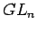

Next: Index of Notation
Up: symp
Previous: Details to the Proof
Index
- Bg
- Bergman, G. M.: The Diamond Lemma for Ring
Theory. Advances in Math. 29 (1978), 178-218.
- BW
- Birman, J., Wenzl, H,: Braids, Link Polynomials and a
new Algebra. Tansactions of the Amer. Math. Soc.,
Vol. 313, No. 1 (1989), 249-273.
- CP
- Chari, V., Pressley, A.: A Guide to Quantum Groups.
Cambridge University Press. 1994.
- Co
- De Concini C.: Symplectic Standard Tableaux. Advances
in Mathematics 34 (1979), 1-27.
- DD
- Dipper, R., Donkin, S.: Quantum . Proc. London Math.
Soc. 63 (1991), 165-211.
- DJ
- Dipper, R., James, G.: The
 -Schur Algebra. Proc.
London Math. Soc. (3) 59 (1989), 23-50.
-Schur Algebra. Proc.
London Math. Soc. (3) 59 (1989), 23-50.
- DJ2
- Dipper, R., James, G.: -tensor space and -Weyl
modules, Trans. A.M.S. 327 (1991), 251-282.
- DJM
- Dipper, R., James, G., Mathas, A.:
Cyclotomic -Schur Algebras. Math. Zeitschrift 229 (1998),
385-416.
- Do1
- Donkin, S.: Good Filtrations of Rational Modules for
Reductive Groups. Arcata Conf. on Repr. of Finite Groups. Proceedings
of Symp. in Pure Math., Vol. 47 (1987), 69-80.
- Do2
- Donkin, S.: Representations of symplectic groups and the
symplectic tableaux of R.C. King. Linear and Multilinear Algebra, Vol.
29 (1991), 113-124.
- Dt
- Doty, S.: Polynomial Representations, Algebraic Monoids,
and Schur Algebras of Classical Type. J. of
Pure and Applied Algebra, 123 (1998), 165-199.
- GL
- Graham, J.J., Lehrer, G.I.: Cellular Algebras.
Invent. Math. 123 (1996), 1-34.
- Gr
- Green, J.A.: Combinatorics and the Schur algebra. J. of
Pure and Appl. Alg. 88 (1993), 89-106.
- GR
- Green, R.M.: -Schur algebras and quantized enveloping
algebras. Thesis. University of Warwick, 1995.
- HH
- Hashimoto, M., Hayashi, T.: Quantum Multilinear Algebra.
Tohoku Math. J., 44 (1992), 471-521.
- Ha2
- Hayashi, T.: Quantum Deformation of Classical Groups.
Publ. RIMS, Kyoto Univ. 28 (1992), 57-81.
- Ha1
- Hayashi, T.: Quantum Groups and Quantum Determinants.
J. of Algebra 152 (1992), 146-165.
- Ki
- King, R.C.: Weight multiplicity for classical groups.,
Group Theoretical Methods in Physics (fourth International Colloquium,
Nijmegen 1975), Lecture Notes in Physics 50, Springer 1975.
- KX
- König, S., Xi, C.: On the structure of
cellular algebras. Algebras and Modules II, Proceedings of ICRA VIII
(Geiranger), CMS Conference Proceedings.
- Ma
- Martin, S.: Schur Algebras and Representation Theory.
Cambridge University Press, 1993.
- O1
- Oehms, S.: Symplektische -Schur-Algebren, Thesis,
University of Stuttgart. Shaker Verlag Aachen, 1997.
- O2
- Oehms, S.: Centralizer Coalgebras,
FRT-Construction and Symplectic Monoids.
J. of Algebra 244 (2001), 19-44.
- RTF
- Reshetikhin, N. Y., Takhtajan, L. A., Faddeev, L. D.:
Quantization of Lie groups and Lie algebras, Leningrad Math. J. 1
(1990), 193-225.
- Tk
- Takhtajan, L.A.: Lectures on Quantum Groups.
In: Introduction to Quantum Group and Integrable Massive Models
of Quantum Field Theory (Hrsg.: M.-L. Ge, B.-H. Zhao. World
Scientific, 1990.
- We
- Wenzl, H.: Quantum Groups and Subfactors of Type B,
C and D. Commun. Math. Phys. 133 (1990), 383-432.
Sebastian Oehms
2004-08-13